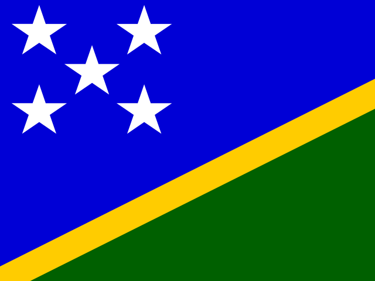

Countries › Oceania
Palau
Where Palau stands out
▲ MOST
1st Micronesia8,718,973
Micronesia8,718,973
2ndPalau3,309,368
3rd Maldives2,161,074
Maldives2,161,074
2nd of 192 · Central Intelligence Agency (CIA) World Factbook and World Bank (derived), 2024
▲ MOST
3rd Gabon91.5%
Gabon91.5%
4thPalau90.2%
5th

Solomon Islands90.0%4th of 192 · Food and Agriculture Organization (FAO) Global Forest Resources Assessment 2025, 2020
▲ MOST
10th Latvia13.4
Latvia13.4
11thPalau13.3
12th Poland13.2
Poland13.2
11th of 192 · United Nations Development Programme (UNDP) Human Development Report 2025, 2023
▲ MOST
14th Mongolia12.9
Mongolia12.9
15thPalau12.2
16th Russia11.9
Russia11.9
15th of 192 · Global Carbon Project, via Our World in Data, 2023
Size, sea and borders
459 km²180th of 195
Sea area it controlsMarine Regions, World Exclusive Economic Zone (EEZ) version 12, 2023 · doi.org
616,431 km²43rd of 191
1,519 kilometres (km)61st of 193
Coastline for its sizeCIA World Factbook and World Bank (derived), 2024 · web.archive.org (cia.gov)
3,309,368 m per 1,000 km²2nd of 192
Number of land bordersGeoNames, 2026-08 · download.geonames.org
0158th of 195, tied with 37
Land and height
242 m181st of 194
90.2% of land4th of 192
Orchards and plantationsFAO, via World Bank, WDI, 2023 · data.worldbank.org
4.4% of land54th of 189
People
17,727 people192nd of 195
Population densityWorld Bank, WDI, 2023 · data.worldbank.org
38.6 people per km²142nd of 192
37.8 years50th of 195
69.3 years135th of 195
Average adult's years of schoolUNDP Human Development Report 2025, 2023 · hdr.undp.org
13.311th of 192
Urban populationWorld Bank, WDI, 2023 · data.worldbank.org
79.2%46th of 195
Share of people born abroadUnited Nations Department of Economic and Social Affairs (UN DESA) International Migrant Stock 2024, 2020 · un.org
28.6%16th of 194
Share of its people living abroadUN DESA International Migrant Stock 2024, 2020 · un.org
14.5%41st of 193
Food, power and travel
12.2 tonnes15th of 192
3170th of 189, tied with 7
Ships registered under its flagCIA World Factbook, 2024 edition, 2024 · web.archive.org (cia.gov)
42745th of 162
Football and chess
Football internationals played, all timeInternational football results (martj42), 2026 · github.com
2192nd of 193, tied with 1
Showing 20 highlights for Palau. Rank counts from the highest value among the countries that have data: 1st is the most. Ties share a rank. Data version 91, 22 November 2026.
Sort Palau against four others
The game has figures for Palau on 100 of its 190 questions.
The same game for Android and iOS. It launches on 10 December 2026.
Out now.